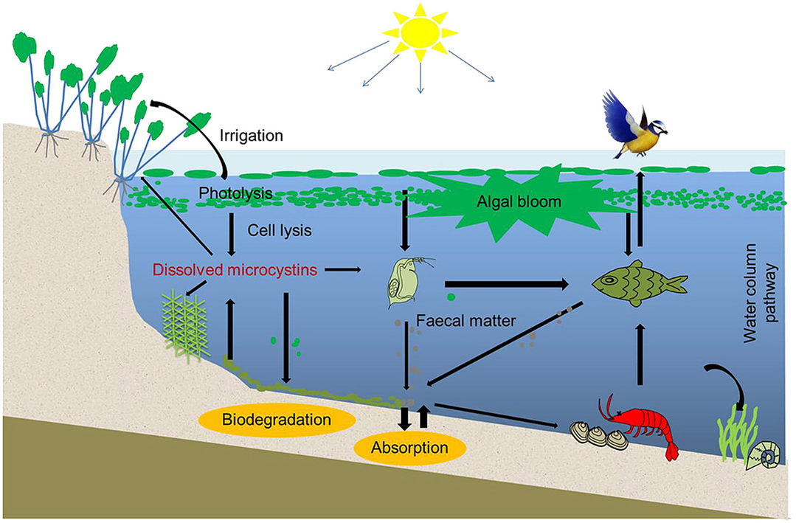
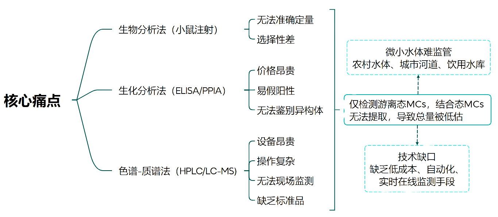

Scope
What is monitored
Microcystins in freshwater environments, with MC-LR used as the main target molecule in the current design.
Description
The project focuses on cyanobacterial blooms and microcystins, especially MC-LR, as a freshwater safety challenge that needs faster, field-oriented monitoring.
Background
The project background frames cyanobacterial blooms as a recurring freshwater issue. When bloom-forming cyanobacteria release microcystins, the risk is no longer only ecological; it can affect drinking-water safety, recreation, aquaculture, and food-chain exposure.
Among more than ninety reported microcystin isomers, MC-LR is treated in the project material as a priority target because of its distribution and toxicity profile.
Target molecule
The materials describe MC-LR as a representative and hazardous microcystin. The wiki therefore presents MC-LR as the initial detection target while leaving room for future extension to other microcystin variants.
Scope
Microcystins in freshwater environments, with MC-LR used as the main target molecule in the current design.
Context
The source materials connect risk to reservoirs, aquaculture water, seasonal bloom periods, and downstream ecological transfer.
Need
A sensor network can support earlier warning than occasional centralized sampling alone, especially when toxin levels change with bloom dynamics.

Evidence
The background material summarizes reservoir and aquaculture-water evidence from Guangdong and surrounding contexts. It reports that toxin detection was not isolated to a single location, which supports the need for broader monitoring rather than one-off testing.
Exact citations and final regulatory wording should be added before competition submission. For this prototype, numbers from the source material are treated as project context, not final scientific claims.

Ecosystem
The project material connects toxins in water to aquatic organisms, plants, sediments, and food-chain transfer. This gives the project a systems-level motivation: water testing is also about ecosystem and agricultural safety.
The current wiki keeps this section descriptive until the team adds final citations, sampling maps, and quantitative risk analysis.
Gap
The source material includes a dedicated discussion of bottlenecks in current microcystin monitoring. The project response is to explore an automatic monitoring system that can collect signals, upload data, and support faster decisions.
A mature final page should compare the proposed biosensor with standard analytical methods. This prototype does not claim replacement of regulatory testing; it frames the system as warning, screening, and monitoring support.
Content pending
These items are not available in the current verified materials.